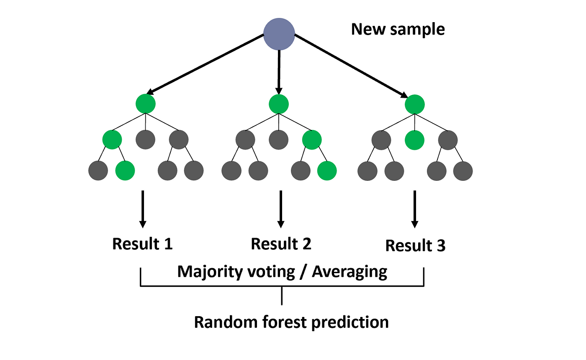

Welcome to the enthralling world of Random Forests, where predictive modeling takes on a new dimension. Picture yourself navigating through a dense forest of decision trees, each tree contributing to a collective intelligence that transcends individual capabilities. In this journey, we'll demystify Random Forests, explore its principles, and witness its power. Follow along as we delve into the thought process, the problem, the solution, and real-world analysis with R.
Our expedition begins with a common challenge: predicting the future. Imagine standing at the entrance of a mysterious cave, armed with historical data and a burning curiosity to forecast upcoming events. For our scenario, let's consider predicting housing prices based on various features. Traditional models may struggle with complex relationships and outliers, prompting us to seek a robust solution.
Enter Random Forest, a powerful algorithm that harnesses the collective intelligence of decision trees. Decision trees, like the trees in our forest analogy, are simple models making decisions based on features. However, a single tree might get lost in the complexity of the terrain. Random Forest addresses this by growing an entire forest of trees, each slightly different from the others.
The Thought Process Unveiled
# Loading the Data:
library(randomForest)
# Read the dataset (assuming 'housing_data' is the dataframe)
# Adjust the path accordingly
housing_data <- read.csv("path/to/your/dataset.csv")
# Training the Random Forest Model:
# Set the seed for reproducibility
set.seed(123)
# Train the Random Forest model
rf_model <- randomForest(price ~ ., data = housing_data, ntree = 100)
# Feature Importance Plot:
# Visualize feature importance
importance_plot <- randomForest::importance(rf_model)
varImpPlot(importance_plot, main = "Feature Importance in Random Forest")
# Prediction and Evaluation:
# Make predictions
predictions <- predict(rf_model, newdata = housing_data)
# Evaluate the model
accuracy <- mean(predictions == housing_data$price)
cat("Model Accuracy:", round(accuracy * 100, 2), "%\n")
In our visualizations, we can observe the significance of different features in predicting housing prices, providing insights into the decision-making process of our Random Forest.
Emerging from the dense foliage of Random Forests, we gain a newfound appreciation for its ability to navigate complex landscapes with finesse. The ensemble of decision trees, each contributing a unique perspective, exemplifies the strength in unity. Armed with R as our guide, we've witnessed the algorithm in action, bringing predictive modeling to a new level of accuracy and reliability.
In the ever-evolving realm of data science, Random Forest remains a stalwart companion, ready to guide us through the wilderness of predictive analytics. Our journey may have started with a predictive modeling challenge, but it concludes with the realization that, in the world of machine learning, the forest is rich with possibilities waiting to be explored.